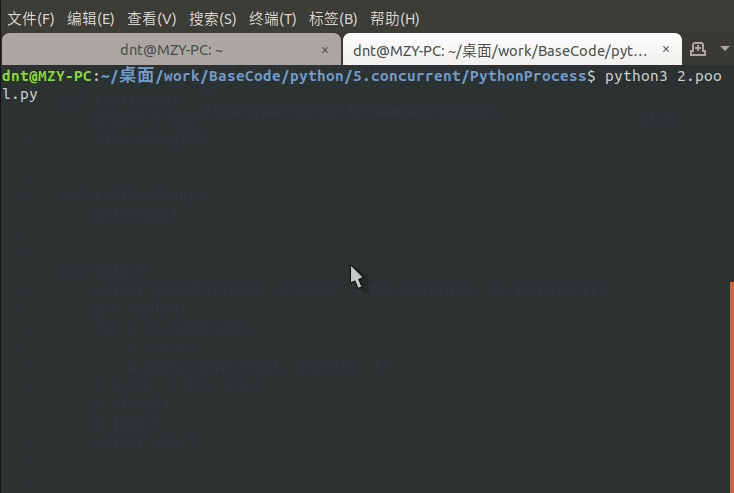
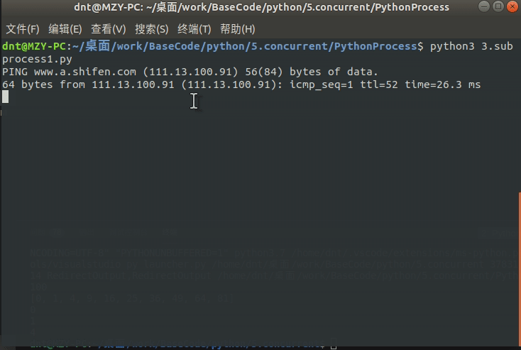
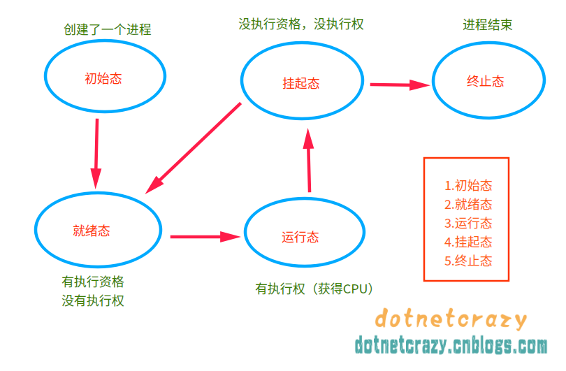
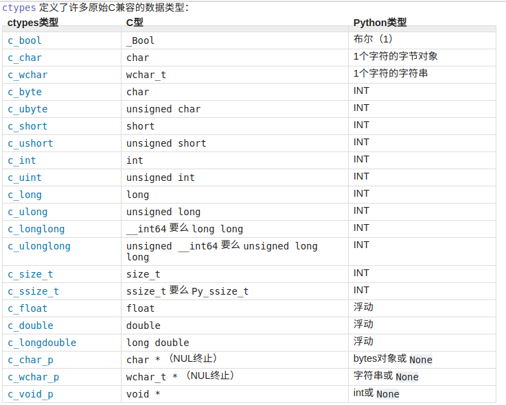
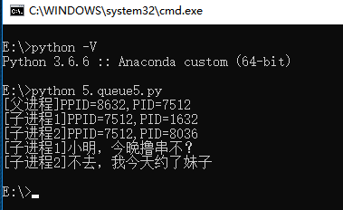
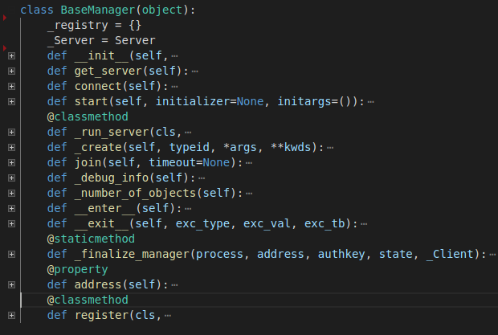
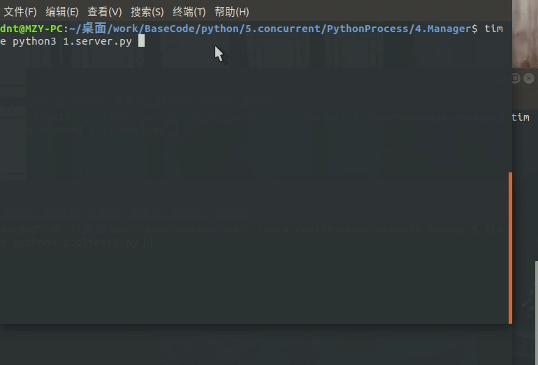
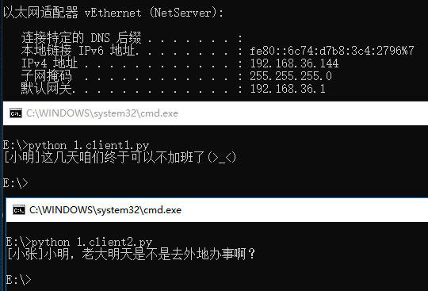

上次说了很多Linux下进程相关知识，这边不再复述，下面来说说Python的并发编程，如有错误欢迎提出～
如果遇到听不懂的可以看上一次的文章：https://www.cnblogs.com/dotnetcrazy/p/9363810.html
官方文档：https://docs.python.org/3/library/concurrency.html
官方文档：https://docs.python.org/3/library/multiprocessing.html
Code：https://github.com/lotapp/BaseCode/tree/master/python/5.concurrent/PythonProcess
Python的进程创建非常方便，看个案例：(这种方法通用，fork只适用于Linux系)
import os
# 注意一下，导入的是Process不是process（Class是大写开头）
from multiprocessing import Process
def test(name):
print("[子进程-%s]PID：%d，PPID：%d" % (name, os.getpid(), os.getppid()))
def main():
print("[父进程]PID：%d，PPID：%d" % (os.getpid(), os.getppid()))
p = Process(target=test, args=("萌萌哒", )) # 单个元素的元组表达别忘了(x,)
p.start()
p.join() # 父进程回收子进程资源（内部调用了wait系列方法）
if __name__ == '__main__':
main()
运行结果：
[父进程]PID：25729，PPID：23434
[子进程-萌萌哒]PID：25730，PPID：25729创建子进程时，传入一个执行函数和参数，用start()方法来启动进程即可
join()方法是父进程回收子进程的封装（主要是回收僵尸子进程(点我)）
其他参数可以参考源码 or 文档，贴一下源码的init方法：
def __init__(self,group=None,target=None,name=None,args=(),kwargs={},*,daemon=None)
扩展：name：为当前进程实例的别名
p.is_alive() 判断进程实例p是否还在执行p.terminate() 终止进程（发SIGTERM信号）上面的案例如果用OOP来实现就是这样：(如果不指定方法，默认调Run方法)
import os
from multiprocessing import Process
class My_Process(Process):
# 重写了Proce类的Init方法
def __init__(self, name):
self.__name = name
Process.__init__(self) # 调用父类方法
# 重写了Process类的run()方法
def run(self):
print("[子进程-%s]PID：%d，PPID：%d" % (self.__name, os.getpid(),
os.getppid()))
def main():
print("[父进程]PID：%d，PPID：%d" % (os.getpid(), os.getppid()))
p = My_Process("萌萌哒") # 如果不指定方法，默认调Run方法
p.start()
p.join() # 父进程回收子进程资源（内部调用了wait系列方法）
if __name__ == '__main__':
main()
PS：multiprocessing.Process自行处理僵死进程，不用像os.fork那样自己建立信号处理程序、安装信号处理程序
现在说说里面的一些门道（只想用的可以忽略）
新版本的封装可能多层，这时候可以看看Python3.3.X系列（这个算是Python3早期版本了，很多代码都暴露出来，比较明了直观）
multiprocessing.process.py
# 3.4.x开始，Process有了一个BaseProcess
# https://github.com/python/cpython/blob/3.7/Lib/multiprocessing/process.py
# https://github.com/lotapp/cpython3/tree/master/Lib/multiprocessing/process.py
def join(self, timeout=None):
'''一直等到子进程over'''
self._check_closed()
# 断言（False就触发异常，提示就是后面的内容
# 开发中用的比较多，部署的时候可以python3 -O xxx 去除所以断言
assert self._parent_pid == os.getpid(), "只能 join 一个子进程"
assert self._popen is not None, "只能加入一个已启动的进程"
res = self._popen.wait(timeout) # 本质就是用了我们之前讲的wait系列
if res is not None:
_children.discard(self) # 销毁子进程
multiprocessing.popen_fork.py
# 3.4.x开始，在popen_fork文件中（以前是multiprocessing.forking.py）
# https://github.com/python/cpython/blob/3.7/Lib/multiprocessing/popen_fork.py
# https://github.com/lotapp/cpython3/tree/master/Lib/multiprocessing/popen_fork.py
def wait(self, timeout=None):
if self.returncode is None:
# 设置超时的一系列处理
if timeout is not None:
from multiprocessing.connection import wait
if not wait([self.sentinel], timeout):
return None
# 核心操作
return self.poll(os.WNOHANG if timeout == 0.0 else 0)
return self.returncode
# 回顾一下上次说的：os.WNOHANG - 如果没有子进程退出，则不阻塞waitpid()调用
def poll(self, flag=os.WNOHANG):
if self.returncode is None:
try:
# 他的内部调用了waitpid
pid, sts = os.waitpid(self.pid, flag)
except OSError as e:
# 子进程尚未创建
# e.errno == errno.ECHILD == 10
return None
if pid == self.pid:
if os.WIFSIGNALED(sts):
self.returncode = -os.WTERMSIG(sts)
else:
assert os.WIFEXITED(sts), "Status is {:n}".format(sts)
self.returncode = os.WEXITSTATUS(sts)
return self.returncode
关于断言的简单说明：（别泛滥）
如果条件为真，它什么都不做，反之它触发一个带可选错误信息的AssertionError
def test(a, b):
assert b != 0, "哥哥，分母不能为0啊"
return a / b
def main():
test(1, 0)
if __name__ == '__main__':
main()
结果：
Traceback (most recent call last):
File "0.assert.py", line 11, in <module>
main()
File "0.assert.py", line 7, in main
test(1, 0)
File "0.assert.py", line 2, in test
assert b != 0, "哥哥，分母不能为0啊"
AssertionError: 哥哥，分母不能为0啊运行的时候可以指定-O参数来忽略assert，eg：
python3 -O 0.assert.py
Traceback (most recent call last):
File "0.assert.py", line 11, in <module>
main()
File "0.assert.py", line 7, in main
test(1, 0)
File "0.assert.py", line 3, in test
return a / b
ZeroDivisionError: division by zero扩展：
https://docs.python.org/3/library/unittest.html
https://www.cnblogs.com/shangren/p/8038935.html
多个进程就不需要自己手动去管理了，有Pool来帮你完成，先看个案例：
import os
import time
from multiprocessing import Pool # 首字母大写
def test(name):
print("[子进程-%s]PID=%d，PPID=%d" % (name, os.getpid(), os.getppid()))
time.sleep(1)
def main():
print("[父进程]PID=%d，PPID=%d" % (os.getpid(), os.getppid()))
p = Pool(5) # 设置最多5个进程（不设置就默认为CPU核数）
for i in range(10):
# 异步执行
p.apply_async(test, args=(i, )) # 同步用apply（如非必要不建议用）
p.close() # 关闭池，不再加入新任务
p.join() # 等待所有子进程执行完毕回收资源（join可以指定超时时间，eg：`p.join(1)`）
print("over")
if __name__ == '__main__':
main()
图示：（join可以指定超时时间，eg：p.join(1)）

调用join()之前必须先调用close()，调用close()之后就不能继续添加新的Process了(下面会说为什么)
验证一下Pool的默认大小是CPU的核数，看源码：
multiprocessing.pool.py
# https://github.com/python/cpython/blob/3.7/Lib/multiprocessing/pool.py
# https://github.com/lotapp/cpython3/tree/master/Lib/multiprocessing/pool.py
class Pool(object):
def __init__(self, processes=指定的进程数,...):
if processes is None:
processes = os.cpu_count() or 1 # os.cpu_count() ~ CPU的核数
源码里面apply_async方法，是有回调函数（callback）的
def apply_async(self,func,args=(),kwds={},callback=None,error_callback=None):
if self._state != RUN:
raise ValueError("Pool not running")
result = ApplyResult(self._cache, callback, error_callback)
self._taskqueue.put(([(result._job, 0, func, args, kwds)], None))
return result
来看个例子：(和JQ很像)
import os
import time
from multiprocessing import Pool # 首字母大写
def test(name):
print("[子进程%s]PID=%d，PPID=%d" % (name, os.getpid(), os.getppid()))
time.sleep(1)
return name
def error_test(name):
print("[子进程%s]PID=%d，PPID=%d" % (name, os.getpid(), os.getppid()))
raise Exception("[子进程%s]啊，我挂了～" % name)
def callback(result):
"""成功之后的回调函数"""
print("[子进程%s]执行完毕" % result) # 没有返回值就为None
def error_callback(msg):
"""错误之后的回调函数"""
print(msg)
def main():
print("[父进程]PID=%d，PPID=%d" % (os.getpid(), os.getppid()))
p = Pool() # CPU默认核数
for i in range(5):
# 搞2个出错的看看
if i > 2:
p.apply_async(
error_test,
args=(i, ),
callback=callback,
error_callback=error_callback) # 异步执行
else:
# 异步执行，成功后执行callback函数（有点像jq）
p.apply_async(test, args=(i, ), callback=callback)
p.close() # 关闭池，不再加入新任务
p.join() # 等待所有子进程执行完毕回收资源
print("over")
if __name__ == '__main__':
main()
输出：
[父进程]PID=12348，PPID=10999
[子进程0]PID=12349，PPID=12348
[子进程2]PID=12351，PPID=12348
[子进程1]PID=12350，PPID=12348
[子进程3]PID=12352，PPID=12348
[子进程4]PID=12352，PPID=12348
[子进程3]啊，我挂了～
[子进程4]啊，我挂了～
[子进程0]执行完毕
[子进程2]执行完毕
[子进程1]执行完毕
over接着上面继续拓展，补充说说获取函数返回值。上面是通过成功后的回调函数来获取返回值，这次说说自带的方法：
import time
from multiprocessing import Pool, TimeoutError
def test(x):
"""开平方"""
time.sleep(1)
return x * x
def main():
pool = Pool()
task = pool.apply_async(test, (10, ))
print(task)
try:
print(task.get(timeout=1))
except TimeoutError as ex:
print("超时了～", ex)
if __name__ == '__main__':
main()
输出：（apply_async返回一个ApplyResult类，里面有个get方法可以获取返回值）
<multiprocessing.pool.ApplyResult object at 0x7fbc354f50b8>
超时了～再举个例子，顺便把Pool里面的map和imap方法搞个案例（类比jq）
import time
from multiprocessing import Pool
def test(x):
return x * x
if __name__ == '__main__':
with Pool(processes=4) as pool:
task = pool.apply_async(test, (10, ))
print(task.get(timeout=1))
obj_list = pool.map(test, range(10))
print(obj_list)
# 返回一个可迭代类的实例对象
obj_iter = pool.imap(test, range(10))
print(obj_iter)
next(obj_iter)
for i in obj_iter:
print(i, end=" ")
输出：
100
[0, 1, 4, 9, 16, 25, 36, 49, 64, 81]
<multiprocessing.pool.IMapIterator object at 0x7ff7f9734198>
1 4 9 16 25 36 49 64 81微微看一眼源码：(基础忘了可以查看==> 点我 )
class IMapIterator(object):
def __init__(self, cache):
self._cond = threading.Condition(threading.Lock())
self._job = next(job_counter)
self._cache = cache
self._items = collections.deque()
self._index = 0
self._length = None
self._unsorted = {}
cache[self._job] = self
def __iter__(self):
return self # 返回一个迭代器
# 实现next方法
def next(self, timeout=None):
with self._cond:
try:
item = self._items.popleft()
except IndexError:
if self._index == self._length:
raise StopIteration from None
self._cond.wait(timeout)
try:
item = self._items.popleft()
except IndexError:
if self._index == self._length:
raise StopIteration from None
raise TimeoutError from None
success, value = item
if success:
return value
raise value
......
扩展：优雅杀死子进程的探讨 https://segmentfault.com/q/1010000005077517
官方文档：https://docs.python.org/3/library/subprocess.html
还记得之前李代桃僵的execlxxx系列吗？
这不，subprocess就是它的一层封装，当然了要强大的多，先看个例子：（以os.execlp的例子为引）
import subprocess
def main():
# os.execlp("ls", "ls", "-al") # 执行Path环境变量可以搜索到的命令
result = subprocess.run(["ls", "-al"])
print(result)
if __name__ == '__main__':
main()
输出
总用量 44
drwxrwxr-x 2 dnt dnt 4096 8月 7 17:32 .
drwxrwxr-x 4 dnt dnt 4096 8月 6 08:01 ..
-rw-rw-r-- 1 dnt dnt 151 8月 3 10:49 0.assert.py
-rw-rw-r-- 1 dnt dnt 723 8月 5 18:00 1.process2.py
-rw-rw-r-- 1 dnt dnt 501 8月 3 10:20 1.process.py
-rw-rw-r-- 1 dnt dnt 1286 8月 6 08:16 2.pool1.py
-rw-rw-r-- 1 dnt dnt 340 8月 7 16:38 2.pool2.py
-rw-rw-r-- 1 dnt dnt 481 8月 7 16:50 2.pool3.py
-rw-rw-r-- 1 dnt dnt 652 8月 5 17:01 2.pool.py
-rw-rw-r-- 1 dnt dnt 191 8月 7 17:33 3.subprocess.py
CompletedProcess(args=['ls', '-al'], returncode=0)现在看下官方的文档描述来理解一下：
r"""
具有可访问I / O流的子进程
Subprocesses with accessible I/O streams
此模块允许您生成进程，连接到它们输入/输出/错误管道，并获取其返回代码。
This module allows you to spawn processes, connect to their
input/output/error pipes, and obtain their return codes.
完整文档可以查看：https://docs.python.org/3/library/subprocess.html
For a complete description of this module see the Python documentation.
Main API
========
run(...): 运行命令，等待它完成，然后返回`CompletedProcess`实例。
Runs a command, waits for it to complete,
then returns a CompletedProcess instance.
Popen(...): 用于在新进程中灵活执行命令的类
A class for flexibly executing a command in a new process
Constants（常量）
---------
DEVNULL: 特殊值，表示应该使用`os.devnull`
Special value that indicates that os.devnull should be used
PIPE: 表示应创建`PIPE`管道的特殊值
Special value that indicates a pipe should be created
STDOUT: 特殊值，表示`stderr`应该转到`stdout`
Special value that indicates that stderr should go to stdout
Older API（尽量不用，说不定以后就淘汰了）
=========
call(...): 运行命令，等待它完成，然后返回返回码。
Runs a command, waits for it to complete, then returns the return code.
check_call(...): Same as call() but raises CalledProcessError()
if return code is not 0（返回值不是0就引发异常）
check_output(...): 与check_call（）相同,但返回`stdout`的内容,而不是返回代码
Same as check_call but returns the contents of stdout instead of a return code
getoutput(...): 在shell中运行命令，等待它完成，然后返回输出
Runs a command in the shell, waits for it to complete,then returns the output
getstatusoutput(...): 在shell中运行命令，等待它完成，然后返回一个（exitcode，output）元组
Runs a command in the shell, waits for it to complete,
then returns a (exitcode, output) tuple
"""
其实看看源码很有意思：（内部其实就是调用的os.popen【进程先导篇讲进程守护的时候用过】）
def run(*popenargs, input=None, capture_output=False,
timeout=None, check=False, **kwargs):
if input is not None:
if 'stdin' in kwargs:
raise ValueError('stdin和输入参数可能都不会被使用。')
kwargs['stdin'] = PIPE
if capture_output:
if ('stdout' in kwargs) or ('stderr' in kwargs):
raise ValueError('不能和capture_outpu一起使用stdout 或 stderr')
kwargs['stdout'] = PIPE
kwargs['stderr'] = PIPE
with Popen(*popenargs, **kwargs) as process:
try:
stdout, stderr = process.communicate(input, timeout=timeout)
except TimeoutExpired:
process.kill()
stdout, stderr = process.communicate()
raise TimeoutExpired(
process.args, timeout, output=stdout, stderr=stderr)
except: # 包括KeyboardInterrupt的通信处理。
process.kill()
# 不用使用process.wait（），.__ exit__为我们做了这件事。
raise
retcode = process.poll()
if check and retcode:
raise CalledProcessError(
retcode, process.args, output=stdout, stderr=stderr)
return CompletedProcess(process.args, retcode, stdout, stderr)
返回值类型：CompletedProcess
# https://github.com/lotapp/cpython3/blob/master/Lib/subprocess.py
class CompletedProcess(object):
def __init__(self, args, returncode, stdout=None, stderr=None):
self.args = args
self.returncode = returncode
self.stdout = stdout
self.stderr = stderr
def __repr__(self):
"""对象按指定的格式显示"""
args = [
'args={!r}'.format(self.args),
'returncode={!r}'.format(self.returncode)
]
if self.stdout is not None:
args.append('stdout={!r}'.format(self.stdout))
if self.stderr is not None:
args.append('stderr={!r}'.format(self.stderr))
return "{}({})".format(type(self).__name__, ', '.join(args))
def check_returncode(self):
"""如果退出代码非零，则引发CalledProcessError"""
if self.returncode:
raise CalledProcessError(self.returncode, self.args, self.stdout,
self.stderr)
再来个案例体会一下方便之处：
import subprocess
def main():
result = subprocess.run(["ping", "www.baidu.com"])
print(result.stdout)
if __name__ == '__main__':
main()
图示： 
再来个强大的案例（交互的程序都可以，比如 ftp，nslookup 等等）：popen1.communicate
import subprocess
def main():
process = subprocess.Popen(
["ipython3"],
stdin=subprocess.PIPE,
stdout=subprocess.PIPE,
stderr=subprocess.PIPE)
try:
# 对pstree进行交互
out, err = process.communicate(input=b'print("hello")', timeout=3)
print("Out:%s\nErr:%s" % (out.decode(), err.decode()))
except TimeoutError:
# 如果超时到期，则子进程不会被终止，需要自己处理一下
process.kill()
out, err = process.communicate()
print("Out:%s\nErr:%s" % (out.decode(), err.decode()))
if __name__ == '__main__':
main()
输出：
IPython 6.4.0 -- An enhanced Interactive Python. Type '?' for help.
In [1]: hello
In [2]: Do you really want to exit ([y]/n)?
Err:注意点：如果超时到期，则子进程不会被终止，需要自己处理一下（官方提醒）
这个等会说进程间通信还会说，所以简单举个例子，老规矩拿ps aux | grep bash说事：
import subprocess
def main():
# ps aux | grep bash
# 进程1获取结果
p1 = subprocess.Popen(["ps", "-aux"], stdout=subprocess.PIPE)
# 得到进程1的结果再进行筛选
p2 = subprocess.Popen(["grep", "bash"], stdin=p1.stdout, stdout=subprocess.PIPE)
# 关闭写段（结果已经获取到进程2中了，防止干扰显示）
p1.stdout.close()
# 与流程交互：将数据发送到stdin并关闭它。
msg_tuple = p2.communicate()
# 输出结果
print(msg_tuple[0].decode())
if __name__ == '__main__':
main()
输出：（以前案例：进程间通信～PIPE匿名管道）
dnt 2470 0.0 0.1 24612 5236 pts/0 Ss 06:01 0:00 bash
dnt 2512 0.0 0.1 24744 5760 pts/1 Ss 06:02 0:00 bash
dnt 20784 0.0 0.1 24692 5588 pts/2 Ss+ 06:21 0:00 /bin/bash
dnt 22377 0.0 0.0 16180 1052 pts/1 S+ 06:30 0:00 grep bash其他扩展可以看看这篇文章：subprocess与Popen()
这个比较有意思，看个案例：
from multiprocessing import Process, Pipe
def test(w):
w.send("[子进程]老爸，老妈回来记得喊我一下～")
msg = w.recv()
print(msg)
def main():
r, w = Pipe()
p1 = Process(target=test, args=(w, ))
p1.start()
msg = r.recv()
print(msg)
r.send("[父进程]滚犊子，赶紧写作业，不然我得跪方便面！")
p1.join()
if __name__ == '__main__':
main()
结果：
老爸，老妈回来记得喊我一下～
滚犊子，赶紧写作业，不然我得跪方便面！按照道理应该子进程自己写完自己读了，和上次讲得不一样啊？不急，先看看源码：
# https://github.com/lotapp/cpython3/blob/master/Lib/multiprocessing/context.py
def Pipe(self, duplex=True):
'''返回由管道连接的两个连接对象'''
from .connection import Pipe
return Pipe(duplex)
看看connection.Pipe方法的定义部分，是不是双向通信就看你是否设置duplex=True
# https://github.com/lotapp/cpython3/blob/master/Lib/multiprocessing/connection.py
if sys.platform != 'win32':
def Pipe(duplex=True):
'''返回管道两端的一对连接对象'''
if duplex:
# 双工内部其实是socket系列（下次讲）
s1, s2 = socket.socketpair()
s1.setblocking(True)
s2.setblocking(True)
c1 = Connection(s1.detach())
c2 = Connection(s2.detach())
else:
# 这部分就是我们上次讲的pipe管道
fd1, fd2 = os.pipe()
c1 = Connection(fd1, writable=False)
c2 = Connection(fd2, readable=False)
return c1, c2
else:
def Pipe(duplex=True):
# win平台的一系列处理
......
c1 = PipeConnection(h1, writable=duplex)
c2 = PipeConnection(h2, readable=duplex)
return c1, c2
通过源码知道了，原来双工是通过socket搞的啊～
再看个和原来一样效果的案例：（不用关来关去的了，方便！）
from multiprocessing import Process, Pipe
def test(w):
# 只能写
w.send("[子进程]老爸，咱们完了，老妈一直在门口～")
def main():
r, w = Pipe(duplex=False)
p1 = Process(target=test, args=(w, ))
p1.start() # 你把这个放在join前面就直接死锁了
msg = r.recv() # 只能读
print(msg)
p1.join()
if __name__ == '__main__':
main()
输出：（可以思考下为什么start换个位置就死锁，提示：阻塞读写）
[子进程]老爸，咱们完了，老妈一直在门口～再举个Pool的例子，咱们就进入今天的重点了：
from multiprocessing import Pipe, Pool
def proc_test1(conn):
conn.send("[小明]小张，今天哥们要见一女孩，你陪我呗，我24h等你回复哦～")
msg = conn.recv()
print(msg)
def proc_test2(conn):
msg = conn.recv()
print(msg)
conn.send("[小张]不去，万一被我帅气的外表迷倒就坑了～")
def main():
conn1, conn2 = Pipe()
p = Pool()
p.apply_async(proc_test1, (conn1, ))
p.apply_async(proc_test2, (conn2, ))
p.close() # 关闭池，不再接收新任务
p.join() # 等待回收，必须先关才能join，不然会异常
if __name__ == '__main__':
main()
输出：
[小明]小张，今天哥们要见一女孩，你陪我呗，我24h等你回复哦～
[小张]不去，万一被我帅气的外表迷倒就坑了～
看看源码就理解了：看看Pool的join是啥情况？看源码：
# https://github.com/python/cpython/blob/3.7/Lib/multiprocessing/pool.py
# https://github.com/lotapp/cpython3/blob/master/Lib/multiprocessing/pool.py
def join(self):
util.debug('joining pool')
if self._state == RUN:
# 没关闭就join，这边就会抛出一个异常
raise ValueError("Pool is still running")
elif self._state not in (CLOSE, TERMINATE):
raise ValueError("In unknown state")
self._worker_handler.join()
self._task_handler.join()
self._result_handler.join()
for p in self._pool:
p.join() # 循环join回收
在pool的__init__的方法中，这几个属性：
self._processes = processes # 指定的进程数
self._pool = [] # 列表
self._repopulate_pool() # 给列表append内容的方法
将池进程的数量增加到指定的数量，join的时候会使用这个列表
def _repopulate_pool(self):
# 指定进程数-当前进程数，差几个补几个
for i in range(self._processes - len(self._pool)):
w = self.Process(target=worker,
args=(self._inqueue, self._outqueue,
self._initializer,
self._initargs, self._maxtasksperchild,
self._wrap_exception)
)
self._pool.append(w) # 重点来了
w.name = w.name.replace('Process', 'PoolWorker')
w.daemon = True # pool退出后，通过pool创建的进程都会退出
w.start()
util.debug('added worker')
注意：池的方法只能由创建它的进程使用
一步步的设局，从底层的的pipe()->os.pipe->PIPE，现在终于到Queue了，心酸啊，明知道上面两个项目
里面基本上不会用，但为了你们能看懂源码，说了这么久%>_<%其实以后当我们从Queue说到MQ和RPC之后，现在
讲得这些进程间通信(IPC)也基本上不会用了，但本质你得清楚，我尽量多分析点源码，这样你们以后看开源项目压力会很小
欢迎批评指正～
from multiprocessing import Process, Queue
def test(q):
q.put("[子进程]老爸，我出去嗨了")
print(q.get())
def main():
q = Queue()
p = Process(target=test, args=(q, ))
p.start()
msg = q.get()
print(msg)
q.put("[父进程]去吧比卡丘～")
p.join()
if __name__ == '__main__':
main()
输出：（get和put默认是阻塞等待的）
[子进程]老爸，我出去嗨了
[父进程]去吧比卡丘～先看看Queue的初始化方法：（不指定大小就是最大队列数）
# 队列类型，使用PIPE，缓存，线程
class Queue(object):
# ctx = multiprocessing.get_context("xxx")
# 上下文总共3种：spawn、fork、forkserver（扩展部分会提一下）
def __init__(self, maxsize=0, *, ctx):
# 默认使用最大容量
if maxsize <= 0:
from .synchronize import SEM_VALUE_MAX as maxsize
self._maxsize = maxsize # 指定队列大小
# 创建了一个PIPE匿名管道（单向）
self._reader, self._writer = connection.Pipe(duplex=False)
# `multiprocessing/synchronize.py > Lock`
self._rlock = ctx.Lock() # 进程锁（读）【非递归】
self._opid = os.getpid() # 获取PID
if sys.platform == 'win32':
self._wlock = None
else:
self._wlock = ctx.Lock() # 进程锁（写）【非递归】
# Semaphore信号量通常用于保护容量有限的资源
# 控制信号量,超了就异常
self._sem = ctx.BoundedSemaphore(maxsize)
# 不忽略PIPE管道破裂的错误
self._ignore_epipe = False
# 线程相关操作
self._after_fork()
# 向`_afterfork_registry`字典中注册
if sys.platform != 'win32':
register_after_fork(self, Queue._after_fork)
关于get和put是阻塞的问题，看下源码探探究竟：
q.get()：收消息
def get(self, block=True, timeout=None):
# 默认情况是阻塞（lock加锁）
if block and timeout is None:
with self._rlock:
res = self._recv_bytes()
self._sem.release() # 信号量+1
else:
if block:
deadline = time.monotonic() + timeout
# 超时抛异常
if not self._rlock.acquire(block, timeout):
raise Empty
try:
if block:
timeout = deadline - time.monotonic()
# 不管有没有内容都去读，超时就抛异常
if not self._poll(timeout):
raise Empty
elif not self._poll():
raise Empty
# 接收字节数据作为字节对象
res = self._recv_bytes()
self._sem.release() # 信号量+1
finally:
# 释放锁
self._rlock.release()
# 释放锁后，重新序列化数据
return _ForkingPickler.loads(res)
queue.put():发消息
def put(self, obj, block=True, timeout=None):
# 如果Queue已经关闭就抛异常
assert not self._closed, "Queue {0!r} has been closed".format(self)
# 记录信号量的锁
if not self._sem.acquire(block, timeout):
raise Full # 超过数量，抛个异常
# 条件变量允许一个或多个线程等待，直到另一个线程通知它们
with self._notempty:
if self._thread is None:
self._start_thread()
self._buffer.append(obj)
self._notempty.notify()
非阻塞get_nowait和put_nowait本质其实也是调用了get和put方法：
def get_nowait(self):
return self.get(False)
def put_nowait(self, obj):
return self.put(obj, False)
说这么多不如来个例子看看：
from multiprocessing import Queue
def main():
q = Queue(3) # 只能 put 3条消息
q.put([1, 2, 3, 4]) # put一个List类型的消息
q.put({"a": 1, "b": 2}) # put一个Dict类型的消息
q.put({1, 2, 3, 4}) # put一个Set类型的消息
try:
# 不加timeout，就一直阻塞，等消息队列有空位才能发出去
q.put("再加条消息呗", timeout=2)
# Full(Exception)是空实现，你可以直接用Exception
except Exception:
print("消息队列已满，队列数%s，当前存在%s条消息" % (q._maxsize, q.qsize()))
try:
# 非阻塞，不能put就抛异常
q.put_nowait("再加条消息呗") # 相当于q.put(obj,False)
except Exception:
print("消息队列已满，队列数%s，当前存在%s条消息" % (q._maxsize, q.qsize()))
while not q.empty():
print("队列数：%s，当前存在%s条消息 内容%s" % (q._maxsize, q.qsize(), q.get_nowait()))
print("队列数：%s，当前存在：%s条消息" % (q._maxsize, q.qsize()))
if __name__ == '__main__':
main()
输出：
消息队列已满，队列数3，当前存在3条消息
消息队列已满，队列数3，当前存在3条消息
队列数：3，当前存在3条消息 内容[1, 2, 3, 4]
队列数：3，当前存在2条消息 内容{'a': 1, 'b': 2}
队列数：3，当前存在1条消息 内容{1, 2, 3, 4}
队列数：3，当前存在：0条消息补充说明一下：
q._maxsize 队列数(尽量不用_开头的属性和方法）q.qsize()查看当前队列中存在几条消息q.full()查看是否满了q.empty()查看是否为空再看个简单点的子进程间通信：(铺垫demo)
import os
import time
from multiprocessing import Process, Queue
def pro_test1(q):
print("[子进程1]PPID=%d,PID=%d,GID=%d"%(os.getppid(), os.getpid(), os.getgid()))
q.put("[子进程1]小明，今晚撸串不？")
# 设置一个简版的重试机制（三次重试）
for i in range(3):
if not q.empty():
print(q.get())
break
else:
time.sleep((i + 1) * 2) # 第一次1s，第二次4s，第三次6s
def pro_test2(q):
print("[子进程2]PPID=%d,PID=%d,GID=%d"%(os.getppid(), os.getpid(), os.getgid()))
print(q.get())
time.sleep(4) # 模拟一下网络延迟
q.put("[子进程2]不去，我今天约了妹子")
def main():
queue = Queue()
p1 = Process(target=pro_test1, args=(queue, ))
p2 = Process(target=pro_test2, args=(queue, ))
p1.start()
p2.start()
p1.join()
p2.join()
if __name__ == '__main__':
main()
输出：（time python3 5.queue2.py）
[子进程1]PPID=15220,PID=15221,GID=1000
[子进程2]PPID=15220,PID=15222,GID=1000
[子进程1]小明，今晚撸串不？
[子进程2]不去，我今天约了妹子
real 0m6.087s
user 0m0.053s
sys 0m0.035s多进程基本上都是用pool，可用上面说的Queue方法怎么报错了？
import os
import time
from multiprocessing import Pool, Queue
def error_callback(msg):
print(msg)
def pro_test1(q):
print("[子进程1]PPID=%d,PID=%d,GID=%d" % (os.getppid(), os.getpid(),
os.getgid()))
q.put("[子进程1]小明，今晚撸串不？")
# 设置一个简版的重试机制（三次重试）
for i in range(3):
if not q.empty():
print(q.get())
break
else:
time.sleep((i + 1) * 2) # 第一次1s，第二次4s，第三次6s
def pro_test2(q):
print("[子进程2]PPID=%d,PID=%d,GID=%d" % (os.getppid(), os.getpid(),
os.getgid()))
print(q.get())
time.sleep(4) # 模拟一下网络延迟
q.put("[子进程2]不去，我今天约了妹子")
def main():
print("[父进程]PPID=%d,PID=%d,GID=%d" % (os.getppid(), os.getpid(),
os.getgid()))
queue = Queue()
p = Pool()
p.apply_async(pro_test1, args=(queue, ), error_callback=error_callback)
p.apply_async(pro_test2, args=(queue, ), error_callback=error_callback)
p.close()
p.join()
if __name__ == '__main__':
main()
输出：(无法将multiprocessing.Queue对象传递给Pool方法)
[父进程]PPID=4223,PID=32170,GID=1000
Queue objects should only be shared between processes through inheritance
Queue objects should only be shared between processes through inheritance
real 0m0.183s
user 0m0.083s
sys 0m0.012s下面会详说，先看一下正确方式：（队列换了一下，其他都一样Manager().Queue()）
import os
import time
from multiprocessing import Pool, Manager
def error_callback(msg):
print(msg)
def pro_test1(q):
print("[子进程1]PPID=%d,PID=%d,GID=%d" % (os.getppid(), os.getpid(),
os.getgid()))
q.put("[子进程1]小明，今晚撸串不？")
# 设置一个简版的重试机制（三次重试）
for i in range(3):
if not q.empty():
print(q.get())
break
else:
time.sleep((i + 1) * 2) # 第一次1s，第二次4s，第三次6s
def pro_test2(q):
print("[子进程2]PPID=%d,PID=%d,GID=%d" % (os.getppid(), os.getpid(),
os.getgid()))
print(q.get())
time.sleep(4) # 模拟一下网络延迟
q.put("[子进程2]不去，我今天约了妹子")
def main():
print("[父进程]PPID=%d,PID=%d,GID=%d" % (os.getppid(), os.getpid(),
os.getgid()))
queue = Manager().Queue()
p = Pool()
p.apply_async(pro_test1, args=(queue, ), error_callback=error_callback)
p.apply_async(pro_test2, args=(queue, ), error_callback=error_callback)
p.close()
p.join()
if __name__ == '__main__':
main()
输出：
[父进程]PPID=4223,PID=31329,GID=1000
[子进程1]PPID=31329,PID=31335,GID=1000
[子进程2]PPID=31329,PID=31336,GID=1000
[子进程1]小明，今晚撸串不？
[子进程2]不去，我今天约了妹子
real 0m6.134s
user 0m0.133s
sys 0m0.035s再抛个思考题：（Linux）
import os
import time
from multiprocessing import Pool, Queue
def error_callback(msg):
print(msg)
q = Queue()
def pro_test1():
global q
print("[子进程1]PPID=%d,PID=%d,GID=%d" % (os.getppid(), os.getpid(),
os.getgid()))
q.put("[子进程1]小明，今晚撸串不？")
# 设置一个简版的重试机制（三次重试）
for i in range(3):
if not q.empty():
print(q.get())
break
else:
time.sleep((i + 1) * 2) # 第一次1s，第二次4s，第三次6s
def pro_test2():
global q
print("[子进程2]PPID=%d,PID=%d,GID=%d" % (os.getppid(), os.getpid(),
os.getgid()))
print(q.get())
time.sleep(4) # 模拟一下网络延迟
q.put("[子进程2]不去，我今天约了妹子")
def main():
print("[父进程]PPID=%d,PID=%d,GID=%d" % (os.getppid(), os.getpid(),
os.getgid()))
q = Queue()
p = Pool()
p.apply_async(pro_test1, error_callback=error_callback)
p.apply_async(pro_test2, error_callback=error_callback)
p.close()
p.join()
if __name__ == '__main__':
main()
输出：（为啥这样也可以【提示：fork】）
[父进程]PPID=12855,PID=16879,GID=1000
[子进程1]PPID=16879,PID=16880,GID=1000
[子进程2]PPID=16879,PID=16881,GID=1000
[子进程1]小明，今晚撸串不？
[子进程2]不去，我今天约了妹子
real 0m6.120s
user 0m0.105s
sys 0m0.024s官方参考：https://docs.python.org/3/library/multiprocessing.html
这块官方文档很详细，贴下官方的2个案例：
通过multiprocessing.set_start_method(xxx)来设置启动的上下文类型
import multiprocessing as mp
def foo(q):
q.put('hello')
if __name__ == '__main__':
mp.set_start_method('spawn') # 不要过多使用
q = mp.Queue()
p = mp.Process(target=foo, args=(q,))
p.start()
print(q.get())
p.join()
输出：（set_start_method不要过多使用）
hello
real 0m0.407s
user 0m0.134s
sys 0m0.012s如果你把设置启动上下文注释掉：（消耗的总时间少了很多）
real 0m0.072s
user 0m0.057s
sys 0m0.016s也可以通过multiprocessing.get_context(xxx)获取指定类型的上下文
import multiprocessing as mp
def foo(q):
q.put('hello')
if __name__ == '__main__':
ctx = mp.get_context('spawn')
q = ctx.Queue()
p = ctx.Process(target=foo, args=(q,))
p.start()
print(q.get())
p.join()
输出：（get_context在Python源码里用的比较多，so=>也建议大家这么用）
hello
real 0m0.169s
user 0m0.146s
sys 0m0.024s从结果来看，总耗时也少了很多
说下日记相关的事情：
先看下multiprocessing里面的日记记录：
# https://github.com/lotapp/cpython3/blob/master/Lib/multiprocessing/context.py
def log_to_stderr(self, level=None):
'''打开日志记录并添加一个打印到stderr的处理程序'''
from .util import log_to_stderr
return log_to_stderr(level)
更多Loging模块内容可以看官方文档：https://docs.python.org/3/library/logging.html
这个是内部代码，看看即可：
# https://github.com/lotapp/cpython3/blob/master/Lib/multiprocessing/util.py
def log_to_stderr(level=None):
'''打开日志记录并添加一个打印到stderr的处理程序'''
# 全局变量默认是False
global _log_to_stderr
import logging
# 日记记录转换成文本
formatter = logging.Formatter(DEFAULT_LOGGING_FORMAT)
# 一个处理程序类，它将已适当格式化的日志记录写入流
handler = logging.StreamHandler() # 此类不会关闭流，因为用到了sys.stdout|sys.stderr
# 设置格式：'[%(levelname)s/%(processName)s] %(message)s'
handler.setFormatter(formatter)
# 返回`multiprocessing`专用的记录器
logger = get_logger()
# 添加处理程序
logger.addHandler(handler)
if level:
# 设置日记级别
logger.setLevel(level)
# 现在log是输出到stderr的
_log_to_stderr = True
return _logger
Logging之前也有提过，可以看看：https://www.cnblogs.com/dotnetcrazy/p/9333792.html#2.装饰器传参的扩展（可传可不传）
来个案例：
import logging
from multiprocessing import Process, log_to_stderr
def test():
print("test")
def start_log():
# 把日记输出定向到sys.stderr中
logger = log_to_stderr()
# 设置日记记录级别
# 敏感程度：DEBUG、INFO、WARN、ERROR、CRITICAL
print(logging.WARN == logging.WARNING) # 这两个是一样的
level = logging.INFO
logger.setLevel(level) # 设置日记级别(一般都是WARN)
# 自定义输出
# def log(self, level, msg, *args, **kwargs):
logger.log(level, "我是通用格式") # 通用，下面的内部也是调用的这个
logger.info("info 测试")
logger.warning("warning 测试")
logger.error("error 测试")
def main():
start_log()
# 做的操作都会被记录下来
p = Process(target=test)
p.start()
p.join()
if __name__ == '__main__':
main()
输出：
True
[INFO/MainProcess] 我是通用格式
[INFO/MainProcess] info 测试
[WARNING/MainProcess] warning 测试
[ERROR/MainProcess] error 测试
[INFO/Process-1] child process calling self.run()
test
[INFO/Process-1] process shutting down
[INFO/Process-1] process exiting with exitcode 0
[INFO/MainProcess] process shutting down之前忘记说了～现在快结尾了，补充一下进程5态：(来个草图)

应该尽量避免进程间状态共享，但需求在那，所以还是得研究，官方推荐了两种方式：
Value or Array）¶之前说过Queue：在Process之间使用没问题，用到Pool，就使用Manager().xxx，Value和Array，就不太一样了：
看看源码：（Manager里面的Array和Process共享的Array不是一个概念，而且也没有同步机制）
# https://github.com/lotapp/cpython3/blob/master/Lib/multiprocessing/managers.py
class Value(object):
def __init__(self, typecode, value, lock=True):
self._typecode = typecode
self._value = value
def get(self):
return self._value
def set(self, value):
self._value = value
def __repr__(self):
return '%s(%r, %r)' % (type(self).__name__, self._typecode, self._value)
value = property(get, set) # 给value设置get和set方法（和value的属性装饰器一样效果）
def Array(typecode, sequence, lock=True):
return array.array(typecode, sequence)
以Process为例看看怎么用：
from multiprocessing import Process, Value, Array
def proc_test1(value, array):
print("子进程1", value.value)
array[0] = 10
print("子进程1", array[:])
def proc_test2(value, array):
print("子进程2", value.value)
array[1] = 10
print("子进程2", array[:])
def main():
try:
value = Value("d", 3.14) # d 类型，相当于C里面的double
array = Array("i", range(10)) # i 类型，相当于C里面的int
print(type(value))
print(type(array))
p1 = Process(target=proc_test1, args=(value, array))
p2 = Process(target=proc_test2, args=(value, array))
p1.start()
p2.start()
p1.join()
p2.join()
print("父进程", value.value) # 获取值
print("父进程", array[:]) # 获取值
except Exception as ex:
print(ex)
else:
print("No Except")
if __name__ == '__main__':
main()
输出：（Value和Array是进程|线程安全的）
<class 'multiprocessing.sharedctypes.Synchronized'>
<class 'multiprocessing.sharedctypes.SynchronizedArray'>
子进程1 3.14
子进程1 [10, 1, 2, 3, 4, 5, 6, 7, 8, 9]
子进程2 3.14
子进程2 [10, 10, 2, 3, 4, 5, 6, 7, 8, 9]
父进程 3.14
父进程 [10, 10, 2, 3, 4, 5, 6, 7, 8, 9]
No Except
类型方面的对应关系：
typecode_to_type = {
'c': ctypes.c_char,
'u': ctypes.c_wchar,
'b': ctypes.c_byte,
'B': ctypes.c_ubyte,
'h': ctypes.c_short,
'H': ctypes.c_ushort,
'i': ctypes.c_int,
'I': ctypes.c_uint,
'l': ctypes.c_long,
'L': ctypes.c_ulong,
'q': ctypes.c_longlong,
'Q': ctypes.c_ulonglong,
'f': ctypes.c_float,
'd': ctypes.c_double
}
这两个类型其实是ctypes类型，更多的类型可以去` multiprocessing.sharedctypes`查看，来张图：

回头解决GIL的时候会用到C系列或者Go系列的共享库（讲线程的时候会说）
关于进程安全的补充说明：对于原子性操作就不用说，铁定安全，但注意一下i+=1并不是原子性操作：
from multiprocessing import Process, Value
def proc_test1(value):
for i in range(1000):
value.value += 1
def main():
value = Value("i", 0)
p_list = [Process(target=proc_test1, args=(value, )) for i in range(5)]
# 批量启动
for i in p_list:
i.start()
# 批量资源回收
for i in p_list:
i.join()
print(value.value)
if __name__ == '__main__':
main()
输出：（理论上应该是:5×1000=5000）
2153稍微改一下才行：（进程安全：只是提供了安全的方法，并不是什么都不用你操心了）
# 通用方法
def proc_test1(value):
for i in range(1000):
if value.acquire():
value.value += 1
value.release()
# 官方案例：(Lock可以使用with托管)
def proc_test1(value):
for i in range(1000):
with value.get_lock():
value.value += 1
# 更多可以查看：`sharedctypes.SynchronizedBase` 源码
输出：（关于锁这块，后面讲线程的时候会详说，看看就好【语法的确比C#麻烦点】）
5000看看源码：（之前探讨如何优雅的杀死子进程，其中就有一种方法使用了Value）
def Value(typecode_or_type, *args, lock=True, ctx=None):
'''返回Value的同步包装器'''
obj = RawValue(typecode_or_type, *args)
if lock is False:
return obj
# 默认支持Lock
if lock in (True, None):
ctx = ctx or get_context() # 获取上下文
lock = ctx.RLock() # 获取递归锁
if not hasattr(lock, 'acquire'):
raise AttributeError("%r has no method 'acquire'" % lock)
# 一系列处理
return synchronized(obj, lock, ctx=ctx)
def Array(typecode_or_type, size_or_initializer, *, lock=True, ctx=None):
'''返回RawArray的同步包装器'''
obj = RawArray(typecode_or_type, size_or_initializer)
if lock is False:
return obj
# 默认是支持Lock的
if lock in (True, None):
ctx = ctx or get_context() # 获取上下文
lock = ctx.RLock() # 递归锁属性
# 查看是否有acquire属性
if not hasattr(lock, 'acquire'):
raise AttributeError("%r has no method 'acquire'" % lock)
return synchronized(obj, lock, ctx=ctx)
扩展部分可以查看这篇文章：http://blog.51cto.com/11026142/1874807
Manager）¶官方文档：https://docs.python.org/3/library/multiprocessing.html#managers
有一个服务器进程负责维护所有的对象，而其他进程连接到该进程，通过代理对象操作服务器进程当中的对象
通过返回的经理Manager()将支持类型list、dict、Namespace、Lock、RLock、Semaphore、BoundedSemaphore、Condition、Event、Barrier、Queue
举个简单例子（后面还会再说）：(本质其实就是多个进程通过代理，共同操作服务端内容)
from multiprocessing import Pool, Manager
def test1(d, l):
d[1] = '1'
d['2'] = 2
d[0.25] = None
l.reverse()
def test2(d, l):
print(d)
print(l)
def main():
with Manager() as manager:
dict_test = manager.dict()
list_test = manager.list(range(10))
pool = Pool()
pool.apply_async(test1, args=(dict_test, list_test))
pool.apply_async(test2, args=(dict_test, list_test))
pool.close()
pool.join()
if __name__ == '__main__':
main()
输出：
{1: '1', '2': 2, 0.25: None}
[9, 8, 7, 6, 5, 4, 3, 2, 1, 0]服务器进程管理器比使用共享内存对象更灵活，因为它们可以支持任意对象类型。此外，单个管理器可以通过网络在不同计算机上的进程共享。但是，它们比使用共享内存慢（毕竟有了“中介”）
同步问题依然需要注意一下，举个例子体会一下：
from multiprocessing import Manager, Process, Lock
def test(dict1, lock):
for i in range(100):
with lock: # 你可以把这句话注释掉，然后就知道为什么加了
dict1["year"] += 1
def main():
with Manager() as m:
lock = Lock()
dict1 = m.dict({"year": 2000})
p_list = [Process(target=test, args=(dict1, lock)) for i in range(5)]
for i in p_list:
i.start()
for i in p_list:
i.join()
print(dict1)
if __name__ == '__main__':
main()
扩展补充：
multiprocessing.Lock是一个进程安全对象，因此您可以将其直接传递给子进程并在所有进程中安全地使用它。ManagerUnix/Linux系统下，用fork调用还行，在Windows下创建进程开销巨大。Manager这块官方文档很详细，可以看看：https://docs.python.org/3/library/multiprocessing.html#managers
WinServer的可以参考这篇 or 这篇埋坑记（Manager一般都是部署在Linux的，Win的客户端不影响）
还记得之前的：无法将multiprocessing.Queue对象传递给Pool方法吗？其实一般都是这两种方式解决的：
multiprocessing.Queue()这将使Queue实例在所有子进程中全局共享再看一下Pool的__init__方法：
# processes：进程数
# initializer,initargs 初始化进行的操作
# maxtaskperchild：每个进程执行task的最大数目
# contex：上下文对象
def __init__(self, processes=None, initializer=None, initargs=(),
maxtasksperchild=None, context=None):
第一种方法不够轻量级，在讲案例前，稍微说下第二种方法：(也算把上面留下的悬念解了)
import os
import time
from multiprocessing import Pool, Queue
def error_callback(msg):
print(msg)
def pro_test1():
print("[子进程1]PPID=%d,PID=%d" % (os.getppid(), os.getpid()))
q.put("[子进程1]小明，今晚撸串不？")
# 设置一个简版的重试机制（三次重试）
for i in range(3):
if not q.empty():
print(q.get())
break
else:
time.sleep((i + 1) * 2) # 第一次1s，第二次4s，第三次6s
def pro_test2():
print("[子进程2]PPID=%d,PID=%d" % (os.getppid(), os.getpid()))
print(q.get())
time.sleep(4) # 模拟一下网络延迟
q.put("[子进程2]不去，我今天约了妹子")
def init(queue):
global q
q = queue
def main():
print("[父进程]PPID=%d,PID=%d" % (os.getppid(), os.getpid()))
queue = Queue()
p = Pool(initializer=init, initargs=(queue, ))
p.apply_async(pro_test1, error_callback=error_callback)
p.apply_async(pro_test2, error_callback=error_callback)
p.close()
p.join()
if __name__ == '__main__':
main()
输出：（就是在初始化Pool的时候，传了初始化执行的方法并传了参数：alizer=init, initargs=(queue, ))）
[父进程]PPID=13157,PID=24864
[子进程1]PPID=24864,PID=24865
[子进程2]PPID=24864,PID=24866
[子进程1]小明，今晚撸串不？
[子进程2]不去，我今天约了妹子
real 0m6.105s
user 0m0.071s
sys 0m0.042sWin下亦通用（win下没有os.getgid）

有了1.6的基础，咱们来个例子练练：
BaseManager的缩略图：

服务器端代码：
from multiprocessing import Queue
from multiprocessing.managers import BaseManager
def main():
# 用来身份验证的
key = b"8d969eef6ecad3c29a3a629280e686cf0c3f5d5a86aff3ca12020c923adc6c92"
get_zhang_queue = Queue() # 小张消息队列
get_ming_queue = Queue() # 小明消息队列
# 把Queue注册到网络上, callable参数关联了Queue对象
BaseManager.register("get_zhang_queue", callable=lambda: get_zhang_queue)
BaseManager.register("get_ming_queue", callable=lambda: get_ming_queue)
# 实例化一个Manager对象。绑定ip+端口, 设置验证秘钥
manager = BaseManager(address=("192.168.36.235", 5438), authkey=key)
# 运行serve
manager.get_server().serve_forever()
if __name__ == '__main__':
main()
客户端代码1：
from multiprocessing.managers import BaseManager
def main():
"""客户端1"""
key = b"8d969eef6ecad3c29a3a629280e686cf0c3f5d5a86aff3ca12020c923adc6c92"
# 注册对应方法的名字（从网络上获取Queue）
BaseManager.register("get_ming_queue")
BaseManager.register("get_zhang_queue")
# 实例化一个Manager对象。绑定ip+端口, 设置验证秘钥
m = BaseManager(address=("192.168.36.235", 5438), authkey=key)
# 连接到服务器
m.connect()
q1 = m.get_zhang_queue() # 在自己队列里面留言
q1.put("[小张]小明，老大明天是不是去外地办事啊？")
q2 = m.get_ming_queue() # 获取小明说的话
print(q2.get())
if __name__ == '__main__':
main()
客户端代码2：
from multiprocessing.managers import BaseManager
def main():
"""客户端2"""
key = b"8d969eef6ecad3c29a3a629280e686cf0c3f5d5a86aff3ca12020c923adc6c92"
# 注册对应方法的名字（从网络上获取Queue）
BaseManager.register("get_ming_queue")
BaseManager.register("get_zhang_queue")
# 实例化一个Manager对象。绑定ip+端口, 设置验证秘钥
m = BaseManager(address=("192.168.36.235", 5438), authkey=key)
# 连接到服务器
m.connect()
q1 = m.get_zhang_queue() # 获取小张说的话
print(q1.get())
q2 = m.get_ming_queue() # 在自己队列里面留言
q2.put("[小明]这几天咱们终于可以不加班了(>_<)")
if __name__ == '__main__':
main()输出图示：  服务器运行在Linux的测试： 
其实还有一部分内容没说，明天得出去办点事，先到这吧，后面找机会继续带一下
参考文章：
进程共享的探讨：python-sharing-a-lock-between-processes
多进程锁的探讨：trouble-using-a-lock-with-multiprocessing-pool-pickling-error
JoinableQueue扩展：https://www.cnblogs.com/smallmars/p/7093603.html
Python多进程编程：https://www.cnblogs.com/kaituorensheng/p/4445418.html
有深度但需要辩证看的两篇文章：
跨进程对象共享：http://blog.ftofficer.com/2009/12/python-multiprocessing-3-about-queue
关于Queue：http://blog.ftofficer.com/2009/12/python-multiprocessing-2-object-sharing-across-process
示例代码：https://github.com/lotapp/BaseCode/tree/master/netcore/4_Concurrency
先简单说下概念（其实之前也有说，所以简说下）：
Net里面很少用进程，在以前基本上都是线程+池+异步+并行+协程
我这边简单引入一下，毕竟主要是写Python的教程，Net只是帮你们回顾一下，如果你发现还没听过这些概念，或者你的项目中还充斥着各种Thread和ThreadPool的话，真的得系统的学习一下了，现在官网的文档已经很完善了，记得早几年啥都没有，也只能挖那些外国开源项目：
https://docs.microsoft.com/zh-cn/dotnet/standard/parallel-processing-and-concurrency
Task的目的其实就是为了简化Thread和ThreadPool的代码，下面一起看看吧：
异步用起来比较简单，一般IO，DB，Net用的比较多，很多时候都会采用重试机制，举个简单的例子：
/// <summary>
/// 模拟一个网络操作（别忘了重试机制）
/// </summary>
/// <param name="url">url</param>
/// <returns></returns>
private async static Task<string> DownloadStringAsync(string url)
{
using (var client = new HttpClient())
{
// 设置第一次重试时间
var nextDelay = TimeSpan.FromSeconds(1);
for (int i = 0; i < 3; i++)
{
try
{
return await client.GetStringAsync(url);
}
catch { }
await Task.Delay(nextDelay); // 用异步阻塞的方式防止服务器被太多重试给阻塞了
nextDelay *= 2; // 3次重试机会，第一次1s，第二次2s，第三次4s
}
// 最后一次尝试，错误就抛出
return await client.GetStringAsync(url);
}
}
然后补充说下Task异常的问题，当你await的时候如果有异常会抛出，在第一个await处捕获处理即可
如果async和await就是理解不了的可以这样想：async就是为了让await生效（为了向后兼容）
对了，如果返回的是void，你设置成Task就行了，触发是类似于事件之类的方法才使用void，不然没有返回值都是使用Task
项目里经常有这么一个场景：等待一组任务完成后再执行某个操作,看个引入案例：
/// <summary>
/// 1.批量任务
/// </summary>
/// <param name="list"></param>
/// <returns></returns>
private async static Task<string[]> DownloadStringAsync(IEnumerable<string> list)
{
using (var client = new HttpClient())
{
var tasks = list.Select(url => client.GetStringAsync(url)).ToArray();
return await Task.WhenAll(tasks);
}
}
再举一个场景：同时调用多个同效果的API，有一个返回就好了，其他的忽略
/// <summary>
/// 2.返回首先完成的Task
/// </summary>
/// <param name="list"></param>
/// <returns></returns>
private static async Task<string> GetIPAsync(IEnumerable<string> list)
{
using (var client = new HttpClient())
{
var tasks = list.Select(url => client.GetStringAsync(url)).ToArray();
var task = await Task.WhenAny(tasks); // 返回第一个完成的Task
return await task;
}
}
一个async方法被await调用后，当它恢复运行时就会回到原来的上下文中运行。
如果你的Task不再需要上下文了可以使用：task.ConfigureAwait(false)，eg：写个日记还要啥上下文？
逆天的建议是：在核心代码里面一种使用ConfigureAwait，用户页面相关代码，不需要上下文的加上
其实如果有太多await在上下文里恢复那也是比较卡的，使用ConfigureAwait之后，被暂停后会在线程池里面继续运行
再看一个场景：比如一个耗时操作，我需要指定它的超时时间：
/// <summary>
/// 3.超时取消
/// </summary>
/// <returns></returns>
private static async Task<string> CancellMethod()
{
//实例化取消任务
var cts = new CancellationTokenSource();
cts.CancelAfter(TimeSpan.FromSeconds(3)); // 设置失效时间为3s
try
{
return await DoSomethingAsync(cts.Token);
}
// 任务已经取消会引发TaskCanceledException
catch (TaskCanceledException ex)
{
return "false";
}
}
/// <summary>
/// 模仿一个耗时操作
/// </summary>
/// <returns></returns>
private static async Task<string> DoSomethingAsync(CancellationToken token)
{
await Task.Delay(TimeSpan.FromSeconds(5), token);
return "ok";
}
异步这块简单回顾就不说了，留两个扩展，你们自行探讨：
IProgress<T>，就当留个作业自己摸索下吧～task.Wait or task.Result，这样可以避免死锁Task其他新特征去官网看看吧，引入到此为止了。
这个其实出来很久了，现在基本上都是用PLinq比较多点，主要就是：
以前都是Parallel.ForEach这么用，现在和Linq结合之后非常方便.AsParallel()就OK了
说很抽象看个简单案例：
static void Main(string[] args)
{
IEnumerable<int> list = new List<int>() { 1, 2, 3, 4, 5, 7, 8, 9 };
foreach (var item in ParallelMethod(list))
{
Console.WriteLine(item);
}
}
/// <summary>
/// 举个例子
/// </summary>
private static IEnumerable<int> ParallelMethod(IEnumerable<int> list)
{
return list.AsParallel().Select(x => x * x);
}
正常执行的结果应该是：
1
4
9
25
64
16
49
81并行之后就是这样了（不管顺序了）：
25
64
1
9
49
81
4
16当然了，如果你就是对顺序有要求可以使用：.AsOrdered()
/// <summary>
/// 举个例子
/// </summary>
private static IEnumerable<int> ParallelMethod(IEnumerable<int> list)
{
return list.AsParallel().AsOrdered().Select(x => x * x);
}
其实实际项目中，使用并行的时候：任务时间适中，太长不适合，太短也不适合
记得大家在项目里经常会用到如Sum，Count等聚合函数，其实这时候使用并行就很合适
var list = new List<long>();
for (long i = 0; i < 1000000; i++)
{
list.Add(i);
}
Console.WriteLine(GetSumParallel(list));
private static long GetSumParallel(IEnumerable<long> list)
{
return list.AsParallel().Sum();
}
time dotnet PLINQ.dll
499999500000
real 0m0.096s
user 0m0.081s
sys 0m0.025s不使用并行：（稍微多了点，CPU越密集差距越大）
499999500000
real 0m0.103s
user 0m0.092s
sys 0m0.021s其实聚合有一个通用方法，可以支持复杂的聚合：(以上面sum为例)
.Aggregate(
seed:0,
func:(sum,item)=>sum+item
);稍微扩展一下，PLinq也是支持取消的，.WithCancellation(CancellationToken)
Token的用法和上面一样，就不复述了，如果需要和异步结合，一个Task.Run就可以把并行任务交给线程池了
也可以使用Task的异步方法，设置超时时间，这样PLinq超时了也就终止了
PLinq这么方便，其实也是有一些小弊端的，比如它会直接最大程度的占用系统资源，可能会影响其他的任务，而传统的Parallel则会动态调整
这个PLinq好像没有对应的方法，有新语法你可以说下，来举个例子：
await Task.Run(() =>
Parallel.Invoke(
() => Task.Delay(TimeSpan.FromSeconds(3)),
() => Task.Delay(TimeSpan.FromSeconds(2))
));
取消也支持：
Parallel.Invoke(new ParallelOptions() { CancellationToken = token }, actions);
其实还有一些比如数据流和响应编程没说，这个之前都是用第三方库，刚才看官网文档，好像已经支持了，所以就不卖弄了，感兴趣的可以去看看，其实项目里面有流数据相关的框架，eg：Spark，都是比较成熟的解决方案了基本上也不太使用这些了。
然后还有一些没说，比如NetCore里面不可变类型（列表、字典、集合、队列、栈、线程安全字典等等）以及限流、任务调度等，这些关键词我提一下，也方便你去搜索自己学习拓展
先到这吧，其他的自己探索一下吧，最后贴一些Nuget库，你可以针对性的使用：
Microsoft.Tpl.DataflowRx-MainMicrosoft.Bcl.Immutable不得不感慨一句，微软妈妈真的花了很多功夫，Net的并发编程比Python省心多了（完）